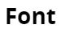
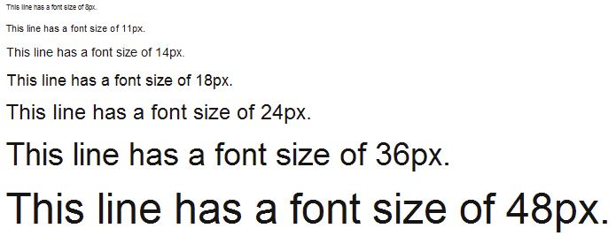

What is typography?
SKYLINE VAPOR LOGO
press the button below to reveal the logo!
Fonts
The first step in making typography is choosing a Font. The difference between the two is that the font is a set of text characters that can be printed in specific style, and thus made into a type face.
The default font used in most sites is either sans-serif, Arial or Helvetica. The reason for this is because of their easy accessibility, which should always be taken into consideration when designing a website.
Here are some exaples of fonts
(Lower case = abcdefghijklmnopqrstuvwxyz. Upper case = ABCDEFGHIJKLMNOPQRSTUVWXYZ.)
(Lower case = abcdefghijklmnopqrstuvwxyz. Upper case = ABCDEFGHIJKLMNOPQRSTUVWXYZ.)
(Lower case = abcdefghijklmnopqrstuvwxyz. Upper case = ABCDEFGHIJKLMNOPQRSTUVWXYZ.)
(Lower case = abcdefghijklmnopqrstuvwxyz. Upper case = ABCDEFGHIJKLMNOPQRSTUVWXYZ.)
(Lower case = abcdefghijklmnopqrstuvwxyz. Upper case = ABCDEFGHIJKLMNOPQRSTUVWXYZ.)
Font Styles and Sizings
Font styles are important, but so are font sizes!
Then you must decide on the size and weight of the chosen font/typeface. From there you can choose from many different types of styles such as ascender, descender, baseline, or kerning.
Finally you should add spaces, Capitals or transparency to the font so that it suites the genre and setting of the website. Examples below: